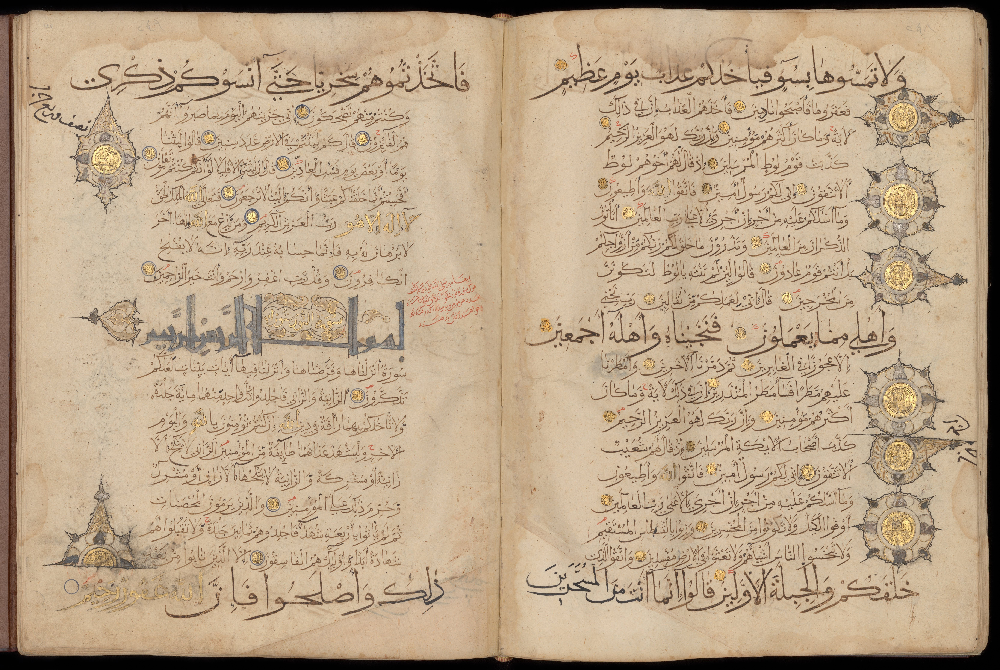

Abrir el Corán es reencontrar a viejos conocidos: Adán, Noé, Abraham, Moisés, Jesús, María. Pero con nombres nuevos y giros que a veces sorprenden.
Si un lector de la Biblia abre el Corán, no entra en territorio desconocido: entra en un paisaje familiar pero reorganizado. Los mismos patriarcas, los mismos profetas, muchas de las mismas historias —el arca, el éxodo, el nacimiento virginal— reaparecen, aunque contadas con otra voz y con diferencias teológicas que importan. El Corán menciona veinticinco profetas por nombre, y veintiuno de ellos también están en la Biblia. Hagamos el reencuentro.

Lo primero que cambia es el sonido. Los nombres bíblicos llegan al Corán en su forma árabe —a veces a través del arameo—, reconocibles pero transformados:
Bajo la piel del árabe, están todos. La continuidad de personajes es casi total en la línea principal de la historia sagrada. Lo interesante aparece cuando comparamos qué se cuenta de cada uno.
Las grandes historias se conservan, pero el Corán las recuenta con su propia teología. Aquí, lado a lado, cuatro casos reveladores:
El patrón es claro: el Corán tiende a presentar a los profetas como modelos impecables (por eso omite la embriaguez de Noé o faltas similares), y reorganiza los relatos en torno a su mensaje central —la unicidad absoluta de Dios (tawhid) y la responsabilidad individual—.
Para muchos lectores, lo más inesperado es el enorme lugar que el Corán da a Jesús (ʿĪsā) y María (Maryam). Lejos de ignorarlos, los honra profundamente —aunque desde una teología distinta de la cristiana—.
Aquí conectamos con la serie anterior. Algunos detalles de la infancia de María y Jesús en el Corán —como María alimentada milagrosamente en el Templo, o Jesús hablando desde la cuna— tienen paralelos llamativos con los evangelios apócrifos de la infancia que quedaron fuera del canon cristiano. Aquellos “libros perdidos” no se perdieron para todos: parte de su imaginería siguió viva y reapareció en el Corán.
El Corán no rechaza a Jesús ni a María: los honra muchísimo. Pero los sitúa como un gran profeta y su santa madre, no como Dios y la madre de Dios. Y curiosamente, recoge detalles sobre ellos que venían de aquellos evangelios apócrifos que vimos en la serie de los libros perdidos.
El Corán no borra la historia sagrada anterior: la reescribe desde dentro. Conserva a casi todos los personajes, mantiene las grandes tramas, y a la vez las depura y las reorienta hacia su mensaje propio. Para el islam esto no es plagio ni contradicción, sino corrección: la misma historia contada por fin “bien”, sin las alteraciones que —según su visión— habían introducido las comunidades anteriores.
Lo que emerge es una tercera versión de una épica compartida. Judaísmo, cristianismo e islam narran, en buena medida, el mismo elenco de personajes —discrepando en lo esencial de quién es Dios y quién es Jesús, pero de acuerdo en el reparto—. En la próxima entrega nos detendremos en esos personajes compartidos uno por uno.
Los datos son verificables y de consenso: el Corán nombra 25 profetas (21 bíblicos); María se menciona 34 veces y da nombre a la sura 19; ʿĪsā (Jesús) es profeta no divino y el Corán niega la crucifixión (sura 4:157); el hijo del sacrificio se entiende mayoritariamente como Ismael; el islam no sostiene el pecado original.
Matices: la identificación del hijo del sacrificio con Ismael es la lectura tradicional dominante, pero el texto coránico no lo nombra explícitamente en ese pasaje, y hubo debate entre los primeros exégetas. Los paralelos con evangelios apócrifos de la infancia (como el Protoevangelio de Santiago o el Evangelio árabe de la infancia) son señalados por los estudiosos como semejanzas; el modo exacto de transmisión sigue en investigación.
Las referencias a versículos siguen la numeración estándar del Corán. Este artículo compara relatos con respeto por las tres tradiciones, sin juzgar la verdad teológica de ninguna.